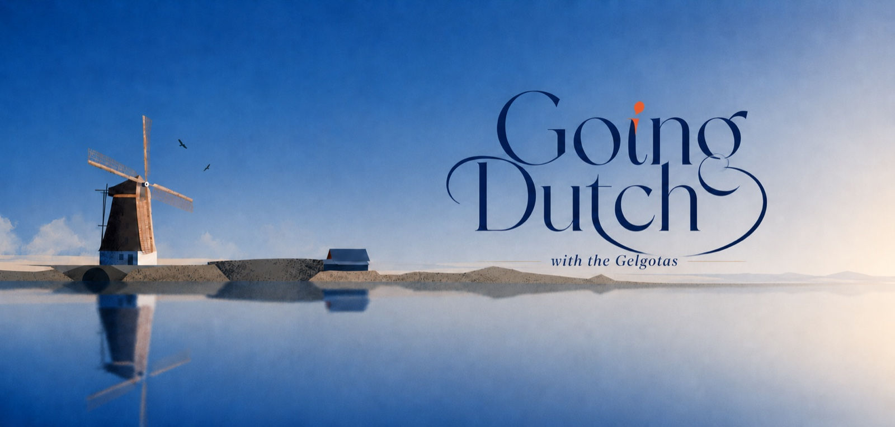
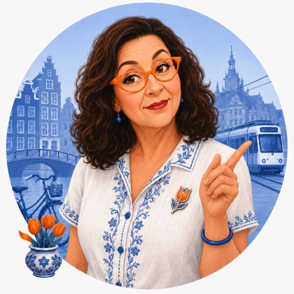
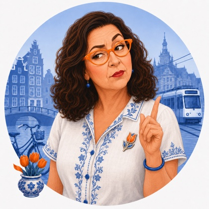
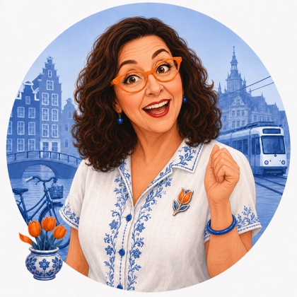
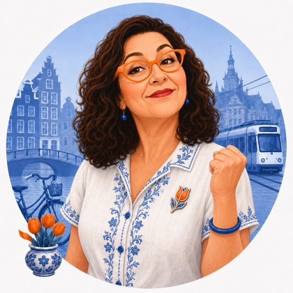
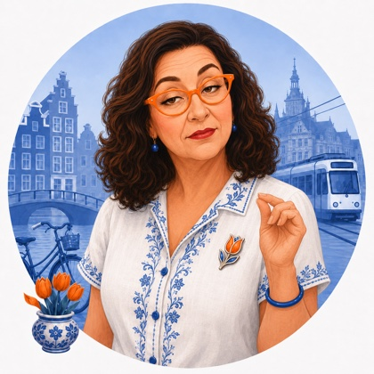

A letter from Tulp de Gid 🌷
Lieve Geltovas, this was a week where the government spent real money just to stay standing, and the children got ready to light up the dark instead. Our prime minister is handing out concessions like party favors to keep his own budget alive, while every child in the country cuts a lantern out of paper or a hollowed beet, ready to sing on doorsteps tomorrow night. Put the kettle on, my dears, and let me tell you about both.

The big story.jpg?width=1000)
The prime minister tries to buy his own budget back
The Netherlands has had a minority cabinet since February, ten seats short of a majority, and the 2027 budget needs votes it does not automatically have. This week Prime Minister Rob Jetten offered roughly three hundred fifty million euros in last minute concessions to try to win them: dropping a planned tax increase on tulip bulbs to please the farmers' party, more money for agricultural sustainability for one Christian party, more for police and prosecutors for another, and a compromise on the wealth tax with his own finance minister that pushes a bigger overhaul out to 2029. As of this letter, no deal is confirmed either way.
Nothing here touches the family directly, but it is worth knowing before you arrive: this is the government that will eventually set the tax rules you move under, and a cabinet that cannot easily pass its own budget means more of these half resolved stories through your first year here, not fewer.

A few quick things, told quickly.jpg?width=400)
The price tag on everyday life ticks up again
Dutch inflation climbed to 3.7 percent in October, up from 3.4 percent in September, with energy the single biggest driver: electricity, gas, and motor fuel together rose 14.4 percent over the year. Groceries, by contrast, actually got very slightly cheaper. It is the energy bill, not the shopping cart, that is doing the damage to a Dutch household budget right now.

The company an hour from your new front door is having its best year yet
ASML, the Veldhoven firm that makes the machines nearly every advanced computer chip in the world depends on, raised its full year sales guidance to about 44 to 45 billion euros and paid out a record 1.88 euro per share dividend on the 4th of November, on the back of a very strong third quarter. It is one of the biggest economic engines within easy reach of your new home, so when it has a good year, the whole region around you tends to feel it.
.jpg?width=400)
The calm first week of November is about to end
Forecasters say the quiet, nearly windless start to the month is giving way this week to Atlantic weather systems arriving one after another, sometimes with heavy rain and real wind, though highs should still sit around a mild eleven degrees. Good timing to know about: it is exactly the week the children will be out after dark with paper lanterns.

Dish of the week
The bun that pays for a good doorstep song
A krentenbol is a soft, lightly sweet bread roll studded through with dried currants, split and buttered while it is still a little warm. It shows up all year, but this week it has a job: it is one of the traditional treats Dutch children are hoping to be handed tomorrow night, Sint Maarten, when they go from door to door with homemade paper lanterns, singing for something sweet the way other countries go trick or treating, minus the scary costumes.
No one is handing out candy bars for nothing here. You sing first, properly, at every door, and only then does the treat appear.
🌷 Tulp's Dutch Calendar Radar
Two dates to circle before my next letter reaches you
Tomorrow, the 11th of November, is Sint Maarten, the lantern night (the dish below has the full story). It is pure coincidence that a separate, unrelated Sint Maarten Day is also marked the same date on the Caribbean island of that name, so do not let the search results confuse you.
Then this Saturday, the 14th, the whole country watches Sinterklaas arrive by steamboat for the start of the season, as it does every year on television. This year the honor goes to the small town of Grave, down in the south, where the boat will dock right at the Loswal on the river, the first time the national arrival has landed in that province since the year 2000.

The night someone painted the most ordinary moment in the world
A single candle, mostly hidden from view, lights almost everything in this small, dark painting: a woman reading quietly, a man leaning in beside her, and at their feet a sleeping baby in a wicker cradle. Made in Rembrandt's own workshop sometime in the 1640s, it is usually read as a quiet, domestic version of the Holy Family, though it could just as easily be any household anywhere, caught in that one hushed hour after a baby finally goes down.
It feels like the right painting for this particular week, with the whole country about to light its own small flames after dark for Sint Maarten. The museum releases the image freely, no permission needed, which this once seems fitting.

The Hague & Scheveningen dispatch.jpg?width=1000)
The grandest address in town turns out to be a theatre
The curved, cream colored building on the Korte Voorhout started life in 1766 as a private palace for a minor German prince. It was converted into a theatre and reopened in 1804 as the Nieuwe Haagsche Schouwburg, and it is still one of the oldest working theatres in the country, now simply called the Koninklijke Schouwburg, the Royal Theatre.
Just a few days before this letter, it finished hosting Crossing Border, an international literature and music festival that fills the theatre and a mirrored tent next door every November, with the band Dry Cleaning among this year's acts. It already ended by the time you read this, but it is worth knowing it happens every year, five minutes from where Alec and Irena already walk the dog.
"Heb je je lampion al af voor morgen?" (Is your lantern finished for tomorrow yet?)
"De tuin hing vol lampionnen." (The garden was strung with lanterns.)
And a glance, before I let you go, at what this little family of ours is up to.
🌷 Tulp's question for the table
Sinterklaas season here runs on one rule worth borrowing: the gift that wins is the one with the best homemade poem taped to it, not the best price tag. What is the most memorable homemade, silly, or thoughtful over expensive gift any of you have ever given or received?
That is the letter, my dears. A prime minister buying his own budget back one concession at a time, a price tag that keeps creeping upward even as the groceries hold steady, a chipmaker an hour from your new front door having its best quarter yet, and two very different kinds of light, a child's paper lantern and a steamboat full of Sinterklaas, both due to arrive before I write to you again.
Enjoy your call this Thursday, 18:30 here, 12:30 in Atlanta, 09:30 in Portland, back to the usual nine hour gap now that both sides of the ocean have finally turned their clocks back.
Tot snel, which just means see you soon. Liefs, Tulp.
%2031.jpg?width=1200)
And here is where I will leave you: fog sitting low over a quiet lake in Friesland, the trees bare, the light coming in sideways instead of from above. This is the Netherlands most visitors never photograph, and it might be my favorite version of it.